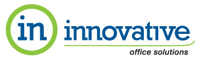
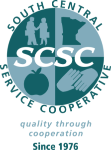

| The Cambridge group provides K-12 educational leaders training and support for strategic planning. Website Link! |
| |

| ISD 11 - Anoka - Hennepin Schools works with cmERDC to develop custom software solutions for K-12 education especially in the area of Elementary Education. |
| |
| East Central Minnesota Educational Cable Cooperative Website link! |
| |
| Kyocera-Mita is a cmERDC partner providing professional copy and fax equipment with complete networking options . |
| |
 | Innovative Office Solutions is more than a preferred supplier for office supplies. Easy on-line ordering & Inky Rewards Program.
On-line Ordering! |
| |
| |
| |
| SIF - Schools Interoperability Framework is an alliance of developers that provide inter-application connectivity and automatic data sharing and updates. Website Link ! |
| |
 | The SouthCentral Service Cooperative (SCSC) programs and services are memberdriven to utilize resources in the most efficient and effective mannerpossible. SCSC is one of nine regional agencies called service cooperatives, established in 1976 by Minnesota legislation (M.S.123A.21). cmERDC has partnered with SCSC to offer their districts our Sagebrush Viewpoint Suite of data warehouse solutions.
SCSC Website |
| |

| EDEN PRAIRIE, Minnesota, October 9, 2009 – Phenomenal Networks, a Premier provider of Vidyo Personal Telepresence, has partnered with the Central Minnesota Educational Research and Development Council (cmERDC), to provide Vidyo video conferencing and virtual learning solutions to Minnesota School Districts. cmERDC, a Joint-Powers Consortium of School Districts, with offices in St. Cloud and Shoreview, provides software and hardware solutions to PK-12 education in Minnesota. |
| |
| Tirarco offers a complete selection of quality art supplies to educators for over 50 years. Receive a 25% discount off most catalog items by referencing cmERDC contract #23434 Website Link |
| |
| The cmERDC partnership with Virco enables out members to purchase quality Virco classroom furniture at extraordinarily low prices all year long. Contact us for current prices and catalogs. Website Link ! |
|